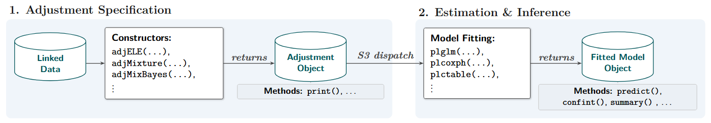
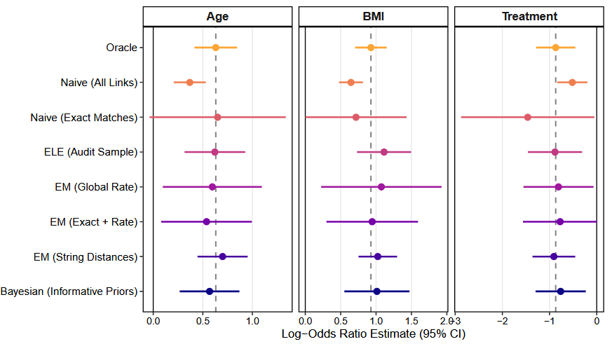

Abstract
The advent of the digital age has reshaped the processes by which
data are collected, shared, and analyzed. An important trend within this
landscape is the integration of disparate data sources, often collected
independently and stored in isolation. Consequently, methods for data
integration are needed to realize the value of all existing data sources
in combination. Among these methods, Record Linkage (RL) plays a pivotal
role by enabling the connection of individual records across multiple
data sets. RL spans a wide array of contemporary applications, including
the linkage of survey data, administrative and electronic health
records, as well as historical censuses and vital records. Open-source
software to facilitate RL when records are linked using
quasi-identifiers is widely available. However, software for analyzing
linked files that accounts for the uncertainty and error-prone nature of
RL is lacking. Specifically, there is lack of software in the secondary
analysis setting in which RL and downstream analysis are conducted
separately. We describe postlink, an R package dedicated to
analyzing data integrated using error-prone record linkage. A central
feature of the package is its extensible, formula-based architecture,
offering a suite of post-linkage counterparts to R’s standard modeling
toolkit.
1. Introduction
Information integration across multiple data sources is increasingly being applied in various scientific and policy contexts. Record linkage (RL) and privacy preserving record linkage (PPRL) refer to a set of tools that identify records on the same entity across data sources. In the absence of unique identifying information, RL and PPRL are prone to errors. Records from different entities may be incorrectly linked (false matches), and records that correspond to the same entity may be missed (false non-matches). These errors can result in biased and inaccurate estimates (Neter et al., 1965). To obtain statistically valid estimates, analyses of linked datasets should adjust for these errors (Chambers & Diniz da Silva, 2020; Kamat & Gutman, 2026; Wang et al., 2022). However, because of privacy considerations, the original datasets and the information pertinent to adjustment may be limited or absent. This challenge is referred to as secondary analysis, in which the linkage is performed by one organization and the analyses of the linked data-sets are implemented by other organizations. The National Institute on Aging (NIA) LINKAGE project, which enables access to NIA-funded study data linked to administrative records from the Centers for Medicare & Medicaid Services, is a prominent example of such a setting (National Institute of Aging, 2025). We use the term post-linkage data analysis (PLDA) to describe statistical analyses of data that have been generated through record linkage or privacy preserving record linkage.
Multiple R packages have been developed to link records in the
absence of unique identifiers. Some of these applications are based on
the Fellegi-Sunter model (Fellegi & Sunter, 1969),
RecordLinkage (Sariyar & Borg, 2025),
fastLink (Enamorado et al., 2023). More recently,
Bayesian record linkage packages were developed, bstrl
(Betancourt et al.,
2022), BRL (Sadinle, 2017) and blink
(Steorts, 2020).
In addition, privacy preserving record linkage package is available
through PPRL (Schmiedel, 2025). Python record linkage
tools such as Splink (Linacre et al., 2022),
recordlinkage (De Bruin, 2019),
dedupe (Gregg
& Eder, 2022), gfs_sampler (Farley & Gutman,
2020), and anonlink (Data61, 2017) have been developed to
offer flexible and scalable linkage solutions.
After the linkage process is complete, it is imperative to evaluate
the quality of the linkage and address possible linkage errors in
downstream analysis. The ER-Evaluation package in Python
(Binette &
Reiter, 2023) has been developed to assess linkage quality
using benchmark data. However, dedicated tools to conduct statistical
analyses that account for potential linkage errors are absent. A common
statistical tool to estimate the relationship between an outcome and a
set of covariates are linear and generalized linear models. These models
are efficiently implemented with the lm() and
glm() commands in R (R Core Team, 2024). Applying these methods
directly to linked datasets assumes that all records are correctly
linked, with no erroneous matches. Although statistical methods to
adjust for linkage errors have been proposed (Kamat & Gutman, 2026), the
corresponding software is often not readily accessible. This poses a
barrier to the adoption and application of these methods in practice.
(Chambers,
2009) provides R functions to adjust for linkage errors
within the regression framework. These methods assume that the
probability of a mismatch is constant across records within defined
subgroups (i.e., exchangeable linkage errors). However, the available R
functions are largely limited to estimating equations for linear and
logistic regressions, and are geared toward simulation and
methodological illustration. As such, they are not well suited for
routine use by analysts or subject-matter experts and may be
computationally inefficient.
We have developed an R package, postlink (Bukke et al.,
2026), that provides a cohesive and user-friendly
implementation of PLDA methods across a range of settings and input
types. The package is available from the Comprehensive R Archive Network
(CRAN) at https://CRAN.R-project.org/package=postlink, and is
implemented using a common modeling interface while adjusting for
falsely linked records. The postlink package focuses on
methods for secondary analysis. In primary analysis settings, where
individual files are accessible, methods that jointly perform record
linkage and analysis with direct propagation of uncertainty are more
appropriate.
The postlink R package consolidates three foundational
frameworks for post-linkage data analysis. First, the software
implements expectation-maximization (EM) based mixture modeling, which
absorbs the precursor package pldamixture (Bukke et al.,
2024) and facilitates contingency table analysis based on
methods developed in Slawski et al. (2025). Second, the package
incorporates a Bayesian mixture modeling approach proposed in Gutman et al. (2016). This approach enables the
estimation of model parameters after adjustments for linkage errors, as
well as using multiple imputations of the latent match status (correctly
vs. incorrectly linked records). The imputed match status can then be
used to fit post-linkage models not originally specified, using standard
multiple imputation combining rules (Rubin, 1996). Third, the package
integrates bias-adjusted estimating equations following the work of
Chambers (2009) for generalized
linear models and Vo et al. (2024) for Cox proportional hazards
regression. Within postlink, the methods in Chambers (2009) are extended to
encompass the Poisson and Gamma regression models. In addition, our
implementation improves the scalability of these methods for larger
datasets and their accessibility for analysts.
Subsequent sections of the paper are structured as follows. Section 2 provides an overview of the
postlink package. Section 3
details the three adjustment methods implemented in the R package. Section 4 illustrates the usage of the
package with a case study. We conclude and discuss future directions in
Section 5. Further demonstrations and details
regarding the package functionality are available on the
postlink website at https://postlink-group.github.io/postlink/. The
long-term goal of postlink is to progressively expand its
functionality to support a broad range of linkage and post-linkage
analysis scenarios.
2. The postlink Architecture
The postlink package provides an extensible
computational framework for post-linkage data analysis (PLDA). Given the
diversity in record linkage pipelines—both in underlying data structures
and in the amount of linkage information available—the software is built
using a modular, object-oriented R architecture. As illustrated in
Figure 1, the workflow leverages S3 method dispatch to decouple the
specification of linkage uncertainty from the substantive statistical
modeling. This separation serves three primary software design
objectives: (1) providing a unified interface for diverse post-linkage
scenarios; (2) allowing practitioners to propagate linkage uncertainty
using standard regression paradigms; and (3) separating the internal
mechanics of the package from its public application programming
interface (API) to facilitate extensibility.
The user workflow is consequently partitioned into two phases: 1) Adjustment Specification and 2) Estimation & Inference. In the first phase, the focus is on formulating the nature of the data and the linkage errors. The second phase focuses on the scientific questions that need to be addressed using the data.

Figure 1: Schematic of the typical two-phase
postlink workflow, illustrating the decoupling of the
adjustment specification from the outcome model fitting.
Phase 1: Adjustment Specification
In the first phase, the analyst defines the linked dataset and the
available information about the linkage process using a constructor
function. These functions, prefixed with adj, correspond to
different frameworks (e.g., weighting-based methods or mixture modeling
approaches). Section 3 describes the specific
adjustment methods and linkage error scenarios currently supported. The
constructors perform an initial validation layer to check for coherence
between the data structure and the assumptions of the chosen adjustment
methodology. Upon successful validation, the constructor returns a
structured S3 Adjustment object. To accommodate large-scale
data, this object is engineered as a lightweight container. This
construction minimizes memory overhead by retaining essential metadata
and accessing the underlying data by reference to avoid duplication. The
Adjustment object also implements context-specific methods
for standard generics (e.g., print(), plot()),
enabling diagnostic inspection of the linkage assumptions before model
fitting.
Phase 2: Estimation and Inference
The second phase handles model fitting through a suite of wrapper
functions designed to mirror standard R regression interfaces. The
current core functions include plglm() for generalized
linear models, plcoxph() for Cox proportional hazards,
plsurvreg() for parametric survival models, and
plctable() for contingency table analyses. Using S3
dispatch, these wrappers automatically retrieve the encapsulated
specifications from the provided Adjustment object and
perform the corresponding internal inference routine. This design allows
analysts to use the familiar formula-based syntax of core R functions
(e.g., stats::glm(), survival::coxph()), while
the package manages the underlying computational complexity. The
resulting fitted model objects integrate with the R ecosystem,
supporting standard post-modeling generics such as
summary(), confint(), vcov(), and
predict(). For Bayesian adjustments, multiple imputation
pooling is supported with a generic mi_with() function.
Dual-Access Interface
Complementing the two-phase workflow, the underlying computational
routines are also available (e.g., glmELE(),
coxphMixture(), survregMixBayes()). The S3
framework can be bypassed to invoke these routines directly, a
capability advantageous for performance-critical tasks, such as
large-scale simulation studies, or for developers prototyping new
adjustment algorithms. This decoupling also ensures that emerging PLDA
methodologies can be integrated without altering the established
modeling syntax.
3. Adjustment Methods for Secondary Analysis
We describe the theoretical foundation for the secondary analysis
methods that are supported in postlink. We assume that the
linked dataset, denoted as LD,
comprises of n record pairs. For entity
i \in \{1, \dots, n\}, we observe a
single outcome variable Y_{Ai} and a
set of covariates \mathbf{X}_{Ai}
originally recorded in data source A, alongside a set of covariates
\mathbf{X}_{Bi} originally recorded in
data source B. Formally, the linked data is defined as LD = \left(\mathbf{X}_{B}, \mathbf{Y}_A,
\mathbf{X}_A \right), where \mathbf{X}_{B} =
\{\mathbf{X}_{B1},\ldots,\mathbf{X}_{Bn}\}, \mathbf{Y}_{A} = \{Y_{A1},\ldots,Y_{An}\} and
\mathbf{X}_{A} =
\{\mathbf{X}_{A1},\ldots,\mathbf{X}_{An}\}. Suppose that an
analyst utilizes dataset LD to estimate
the conditional distribution p(Y_{Ai} \mid
\mathbf{X}_{Ai},\mathbf{X}_{Bi};\boldsymbol{\beta}), where \boldsymbol{\beta} is a set of unknown
parameters governing this distribution. Because LD is formed by merging two separate data
sources without unique identifiers, it contains the observed paired
outcome Y_{Ai}^*, which may differ from
the true outcome Y_{Ai} because of
linkage errors (Y_{Ai}^* \neq Y_{Ai}).
As a result, LD includes both true and
false links, and only limited information on overall linkage quality may
be available (e.g., estimated mismatch rates within blocks).
When the original data sources are of the same size and they both represent the same entities, the observed vector \mathbf{Y}_{A}^* is a permuted version of true vector \mathbf{Y}_{A}, such that \mathbf{Y}_{A}^* = \Delta\mathbf{Y}_{A}, where \Delta is an n\times n permutation matrix with exactly one entry equal to one in each row and column. When there are no errors in the linkage, \Delta is the identity matrix and \mathbf{Y}_{A}^*=\mathbf{Y}_{A}.
This notation cannot be utilized when the dataset includes some records that represent the same entities, and some records that do not. To address this limitation, we rely on an indicator variable C_i with C_i=1 for correct matches, i.e., Y_{Ai}^*=Y_{Ai}, and C_i=0 otherwise, 1 \leq i \leq n.
A naive estimator \widehat{\boldsymbol{\beta}}_N of the
parameter \boldsymbol{\beta} is
obtained by regressing \mathbf{Y}_A^*
on \mathbf{X} = [\mathbf{X}_A \;
\mathbf{X}_B]. This estimator is typically biased when \mathbf{Y}^*_{A} \neq \mathbf{Y}_{A} (Kamat & Gutman,
2026; Neter et al., 1965; Wang et al., 2022). To mitigate this
bias, postlink provides three distinct adjustment
frameworks, which are accessible through the package’s two-phase
adj*() and pl*() architecture. Table 1
provides an overview of these frameworks, their constructor functions,
and statistical modeling they currently support.
Table 1: An overview of three PLDA frameworks implemented in
postlink
| Framework | Constructor | Primary Use Case | Supported Models |
|---|---|---|---|
| Weighting | adjELE() |
When block-level mismatch rates are given (e.g., from audit samples). | GLMs, CoxPH |
| Mixture Modeling | adjMixture() |
When continuous or categorical paradata on linkage quality (e.g., string distances) are available. | GLMs, CoxPH, Contingency Tables |
| Bayesian Mixture | adjMixBayes() |
When exploring multiple scientific models or to incorporate prior knowledge. | GLM, Parametric Survival |
3.1 Weighting
The first approach relies on weighting the estimating equations to correct for mismatch bias. Suppose that \mathbf{X} = \mathbf{X}_B, so that there are no covariates residing with the outcome in data source A. In addition, dataset LD is partitioned into Q blocks, where block q \in \{1,\dots, Q\} is of size n_q, and n = \sum_{q=1}^{Q} n_q. Block partitioning is commonly used to reduce the computational complexity of linkage algorithms. Blocks are formed by requiring exact agreement on categorical linking variables across datasets, such that all individuals within a block share the same values on these variables. Let \mathbf{Y}^{*}_{Aq}, \mathbf{X}_{Bq} and \Delta_q denote the response variable, the matrix of covariates, and a binary matrix of order n_q in block q, respectively. Under the non-informative linkage assumption (Chambers, 2009; Kamat & Gutman, 2026), \Delta_q is independent of \mathbf{Y}_{Aq} given \mathbf{X}_{Bq}, which implies that E(\mathbf{Y}_{Aq}^* \mid \mathbf{X}_{Bq}) = E(\Delta_q \mid \mathbf{X}_{Bq}) E(\mathbf{Y}_{Aq} \mid \mathbf{X}_{Bq}) = E_q f_q(\boldsymbol{\beta}), where E_q = E(\Delta_q \mid \mathbf{X}_{Bq}), and f_q(\boldsymbol{\beta}) = E(\mathbf{Y}_{Aq} \mid \mathbf{X}_{Bq}) is the regression function under correctly linked data. When the data is correctly linked, an estimating equation for \boldsymbol{\beta} is of the form \sum_{q=1}^{Q} \mathbf{G}_q(\mathbf{X}_{Bq}, \boldsymbol{\beta}) \left\{\mathbf{Y}_{Aq}-f_q(\boldsymbol{\beta}) \right\}=0, where \mathbf{G}_q(\mathbf{X}_{Bq}, \boldsymbol{\beta}) is a weighting matrix that is independent of \mathbf{Y}_{Aq}. However, we only have access to \mathbf{Y}^*_{Aq}. Replacing \mathbf{Y}_{Aq} with \mathbf{Y}^*_{Aq} results in the naive estimator \widehat{\boldsymbol{\beta}}_N. This estimator is biased when some of the units are incorrectly linked (Chambers, 2009). To correct for the bias in \widehat{\boldsymbol{\beta}}_N, we modify the equation to adjust for linkage errors, \sum_{q} \mathbf{G}_q(\mathbf{X}_{Bq}, \boldsymbol{\beta}) \left\{ \mathbf{Y}^*_{Aq} - E_q f_q(\boldsymbol{\beta}) \right\} = 0. Chambers (2009) constructed E_q under the exchangeable linkage error (ELE) model [E_q]_{ij} = \begin{cases} \lambda_q, & \text{if record pair } (i,j) \text{ is a link},\\ \frac{1 - \lambda_q}{n_q - 1}, & \text{otherwise}, \end{cases} where \lambda_q is the proportion of correct links in block q, and it is either known to the analyst or estimated from audit samples.
The choice of \mathbf{G}_q(\mathbf{X}_{Bq}, \boldsymbol{\beta}) leads to different estimators. For example, in linear regression, \mathbf{G}_q = \mathbf{X}_{Bq}^\top yields a ratio-type adjustment estimator, which is similar to the one proposed by Scheuren & Winkler (1993). Setting \mathbf{G}_q = \mathbf{X}_{Bq}^\top E_q results in the estimator proposed by Lahiri & Larsen (2005). Setting \mathbf{G}_q = \mathbf{X}_{Bq}^\top E_q^\top (\boldsymbol{\Sigma}_q + \mathbf{V}_q)^{-1} leads to the best linear unbiased estimator (BLUE) of \boldsymbol{\beta}, where \mathbf{V}_q = \mathrm{Var}(\Delta_q E(\mathbf{Y}_q \mid \mathbf{X}_{Bq}) \mid \mathbf{X}_{Bq}) and \boldsymbol{\Sigma}_q is a diagonal matrix containing the observation-specific error variances, \sigma_i^2 = \mathrm{Var}(Y_i \mid \mathbf{X}_{Bi}), 1 \leq i \leq n. Because the BLUE depends on unknown quantities, it can be approximated using an iterative procedure in which these quantities are replaced by successively refined estimates.
This suite of weighting methods has been extended to generalized linear models (Chambers, 2009) and time-to-event models (Vo et al., 2024). Corresponding sandwich-type variance estimators have also been derived (Chambers, 2009).
In postlink, this procedure is implemented using the
two-phase workflow. First, the analyst specifies the ELE assumptions
using the adjELE() constructor:
adjELE(
linked.data,
m.rate, # Block-specific or global mismatch rates
audit.size, # Optional: Sample sizes for clerical review audit
blocks, # Vector defining the blocking structure
weight.matrix # Specifies the G_q matrix formulation
)The m.rate argument supplies block-specific or global
probabilities of mismatch, 1-\lambda_q.
The blocks argument is an indicator for the blocking
structure, which can be omitted if no blocks are present. If the
mismatch rates are estimated from a clerical review, the
audit.size argument can be supplied to accordingly inflate
the variance estimation. The form of the weighting matrix can be
specified in weight.matrix, allowing the user to select
between the ratio-type adjustment ("ratio"), the
Lahiri-Larsen estimator ("LL"), the best linear unbiased
estimator ("BLUE"), or "all" to compute all of
them simultaneously.
Once the adjustment object is validated and constructed, it is passed
to a standard modeling wrapper, such as plglm() for GLMs or
plcoxph() for survival analysis using Cox proportional
hazard model:
plglm(formula, family = "gaussian", adjustment, control, ...)
plcoxph(formula, adjustment, control, ...)The parameter formula describes the relationship between
\mathbf{Y}_q^* and \mathbf{X}_{Bq}, while the parameter
family describes the link function. These arguments
correspond to the regression mean function f_q(\boldsymbol{\beta}). The parameter
family is set to "gaussian" by default, but
can take the values "binomial", "poisson", or
"gamma". The control parameter allows the user
to specify starting values for the iterative algorithm used to estimate
\boldsymbol{\beta}. By default, the
naive estimator is used as the initial value for ratio-type and
Lahiri–Larsen weight matrix adjustments. For the BLUE weight matrix, the
Lahiri–Larsen estimator serves as the default starting value for
estimating \boldsymbol{\beta}.
The backend implementation differs from that of Chambers (2009) primarily in how the
expected estimating equation is handled. By relying on vectorized
operations for block-wise processing and analytically simplifying E_q M into a sum of column means and scalar
constants, the internal computational routine reduces the computational
complexity from \mathcal{O}(n_q^2 d)
down to \mathcal{O}(n_q d), where d represents the number of covariates in the
model (see Appendix A). The nleqslv package (Hasselman, 2023) is
used to solve the non-linear system of equations.
3.2 Inferring true links via latent mixture modeling (EM)
An alternative set of methods that adjusts for linking errors attempts to estimate the configuration of match status indicators \mathbf{C}= \{C_i\}. For record pair i, let \mathbf{Z}_i denote auxiliary variables available at the secondary analysis stage that may be associated with C_i. Following Gutman et al. (2016) and Slawski et al. (2025), a two-component mixture model for \mathbf{C} can be specified as \begin{align} Y_{Ai},\mathbf{X}_{Ai},\mathbf{X}_{Bi} \mid \mathbf{Z}_i,C_{i}=1 & \sim p_m(Y_{Ai},\mathbf{X}_{Ai},\mathbf{X}_{Bi} \mid \mathbf{Z}_i;\boldsymbol{\beta}_m), \\ Y_{Ai},\mathbf{X}_{Ai},\mathbf{X}_{Bi} \mid \mathbf{Z}_i,C_{i}=0 & \sim p_u(Y_{Ai},\mathbf{X}_{Ai},\mathbf{X}_i \mid \mathbf{Z}_i;\boldsymbol{\beta}_{u}), \\ C_i & \sim \text{ Bernoulli }(h(\mathbf{Z}_i;\boldsymbol{\xi})), \end{align} where \boldsymbol{\beta}_m and \boldsymbol{\beta}_u govern the joint distributions p_m and p_u of (Y_{Ai}, \mathbf{X}_{Ai},\mathbf{X}_{Bi}) among true links and false links, respectively. Moreover, h(\cdot\,;\boldsymbol{\xi}) denotes the conditional probability of a true link given \mathbf{Z}_i, with \boldsymbol{\xi} denoting the associated parameters. Slawski et al. (2025) do not consider \mathbf{X}_{Ai} co-occurring with the outcome in data source A and model p_m(Y_{Ai}, \mathbf{X}_{Bi} \mid \mathbf{Z}_i; \boldsymbol{\beta}_m) and p_u(Y_{Ai}, \mathbf{X}_{Bi} \mid \mathbf{Z}_i;\boldsymbol{\beta}_u). In addition, they assume that p_u(Y_{Ai}, \mathbf{X}_{Bi} \mid \mathbf{Z}_i;\boldsymbol{\beta}_u) = p_{uY}(Y_{Ai};\boldsymbol{\beta}_u) \cdot p_{u\mathbf{X}}(\mathbf{X}_{Bi} \mid \mathbf{Z}_i;\boldsymbol{\beta}_u), and estimate \boldsymbol{\beta}_m by maximizing the likelihood resulting from the mixture model using the EM algorithm (Dempster et al., 1977) while a plug-in estimator is used for p_u. The function h(\cdot\,;\boldsymbol{\xi}) can be parameterized in different ways. For instance, h(\cdot\,;\boldsymbol{\xi}) can be modeled according to a logistic regression model, with specific constraints on the linear predictors to facilitate estimation. An intercept-only specification of this logistic regression model corresponds to assuming a constant prior mismatch probability. Standard errors for the estimate of \boldsymbol{\beta}_m are computed using a normal approximation for the sampling distribution of the point estimator.
The EM-based mixture model requires specification using
adjMixture():
adjMixture(
linked.data,
m.formula, # Formula for the mismatch indicator model
m.rate, # Optional: global mismatch rate constraint
safe.matches # Optional: indicator for known true links
)The parameter m.formula takes a one-sided formula object
to model the conditional probability of a false link given the auxiliary
variables \mathbf{Z}_i, 1-h(\cdot\,;\boldsymbol{\xi}). The default is
an intercept-only model (~ 1), corresponding to a constant
marginal mismatch rate. The parameter m.rate allows the
user to supply an estimate to constrain the global mismatch rate. The
parameter safe.matches is a logical vector that indicates
records that are known to be correct matches, fixing their correct
linkage probability to 1 during the estimation process.
Because the adjustment specification is decoupled from the modeling
syntax, the same Adjustment object can be passed to
plglm(), plcoxph(), or plctable()
for analyses. For example, fitting an adjusted contingency table
requires only the formula and the adjustment object:
plctable(formula, adjustment, control, ...)The internal routine retrieves the S3 object, checks for coherence, and dispatches the customized EM algorithm, which iteratively updates the posterior probability that a record is a correct match in the E-step, and maximizes model parameters in the M-step.
3.3 Bayesian mixture modeling and multiple imputation
While the EM approach yields robust maximum likelihood estimates for
a specified p_m, researchers may also
wish to propagate linkage uncertainty into downstream analyses that are
not easily accommodated within an EM framework. In addition, analysts
may use complex models to identify erroneous links but report results
from a simpler primary analysis model. To support these settings,
postlink implements a Bayesian mixture model (Gutman et al.,
2016) for estimating the parameters. Note that in the
Bayesian formulation, \mathbf{X}_i
includes both \mathbf{X}_{Ai} and \mathbf{X}_{Bi}, and parameter constraints
can be imposed through the specification of prior distributions.
Posterior inference can be performed using the data augmentation procedure (Tanner & Wong, 1987), which alternates between imputing \mathbf{C} and updating the model parameters. When p_m coincides with the analysis model of interest, inference based on posterior draws of \boldsymbol{\beta}_m incorporates the uncertainty about \mathbf{C}. In settings where p_m differs from the analysis model, post-linkage inference can be obtained using multiple imputation (Rubin, 1987). Multiple imputed realizations of \mathbf{C} are drawn from the posterior distribution. Each realization is used to fit the analysis model separately, and resulting point and interval estimates are combined across imputations using standard multiple imputation combining rules (Little & Rubin, 2002; Rubin, 1996).
The underlying software for sampling from the posterior distribution
is based on Stan (Stan
Development Team, 2024) and the rstan package
(Stan Development Team,
2025), which employs the No-U-Turn Sampler to draw samples
from the posterior distribution of the parameters (Hoffman & Gelman,
2014). Given the kth draw of
the parameters \boldsymbol{\beta}^{(k)}_{m}, \boldsymbol{\beta}^{(k)}_{u}, and \boldsymbol{\xi}^{(k)}, imputed values of
\mathbf{C}^{(k)} are generated from the
corresponding Bernoulli distribution. Currently, the Bayesian mixture
model assumes that h(\cdot\,;\boldsymbol{\xi}) is constant
across all units.
The Bayesian adjustment is initialized using
adjMixBayes(), which optionally accepts customized prior
distributions and the current specifications of the prior distribution
for the different models is described in Appendix B:
adj_bayes <- adjMixBayes(
linked.data,
priors # Optional custom hyperparameters
)The model is then fitted using a standard wrapper, where the MCMC
iterations and computational cores can be controlled using the
control argument. In addition to GLMs, the package also
provides plsurvreg() for time-to-event outcomes. This
function extends the Bayesian mixture framework to survival data by
specifying p_m and p_u as parametric survival models. The
function call is:
plsurvreg(formula, dist = "weibull", adjustment, control, ...)The parameters formula and data specify the
survival regression model, where the response must be a
Surv() object with right-censoring. The dist
option defines the parametric form of the survival outcome models p_m and p_u,
with current choices including "weibull" and
"gamma". The parameter control is a list that
specifies the MCMC settings, including the number of iterations,
burn-in, random seed, and number of computational cores. These options
control posterior sampling and can be tuned to balance computational
cost with estimation accuracy. We note that the plcoxph()
function implements the semi-parametric Cox proportional hazards model,
and treats the baseline hazard non-parametrically. In contrast, the
plsurvreg() function uses a fully parametric survival model
when performing Bayesian inference.
Finally, to support multiple imputation, the package provides the
mi_with() function:
mi_with(object, data, formula, family)This function extracts samples of the latent match indicators from
the glmMixBayes or survMixBayes objects. Using
these samples, it repeatedly fits a user-specified regression model
(formula and family) on the subset of records
classified as correct matches for each MCMC draw. Estimates across
imputations are aggregated using standard combination rules for multiple
imputation (Little
& Rubin, 2002; Rubin,
1996).
4. Illustrations
We illustrate the implementation of the different post-linkage
adjustment methods and their inclusion of paradata available from the
linkage process. We simulate a linkage pipeline using the
RLdata10000 dataset from the RecordLinkage
package (Sariyar
& Borg, 2025).
A secondary analysis environment is generated with an approximate 30%
mismatch rate by constructing two separate datasets. Dataset A consists
of 1,000 unique records and contains the demographic and clinical
predictors: BMI, Age, and a binary
Treatment indicator. Dataset B contains the binary outcome
variable, Disease_Status. To construct these datasets, we
use the RLdata10000 data as identifiers of entities that
possess two distinct records, which often contain natural typographical
errors. We randomly selected 700 of these record pairs, allocating the
first instance to Dataset A and the corresponding error-prone second
instance to Dataset B. To complete the 1,000-record cohorts, the
remaining 300 records in Dataset A and 300 records in Dataset B were
sampled from mutually exclusive sets of identifiers representing unique,
unmatchable entities. This design guarantees 700 true matchable entities
across the files, systematically enforcing a mismatch rate of at least
30% when the files are linked as described below. Both datasets share a
set of error-prone quasi-identifiers used for the linkage process: first
name, last name, and date of birth. We assume that the linkage process
is strongly non-informative, so that the linkage errors are independent
of the variables used in the post-linkage analysis (Kamat & Gutman,
2026).
The two files are linked probabilistically with the
fastLink package that implements the Fellegi-Sunter model
(Fellegi & Sunter,
1969). To maintain an analytical cohort of n=1000 units, unlinked records from both
files are paired uniformly at random. Within this linked dataset, a
subset of records was designated as “safe matches” if both the first and
last names exhibit exact string agreement across the datasets.
The primary objective is to fit a logistic regression model to
estimate the probability of the outcome (Disease_Status)
given the covariates (BMI, Age, and
Treatment). Formally, the analysis model is given by:
\begin{aligned} \text{logit}(P(Y_i = 1 \mid \text{BMI}_i, \text{Age}_i, \text{Treatment}_i)) &= \beta_0 + \beta_{\text{BMI}}\text{BMI}_i \\ &\quad + \beta_{\text{Age}}\text{Age}_i + \beta_{\text{Treatment}}\text{Treatment}_i \end{aligned}
For comparability of effect sizes across the continuous and binary
predictors, both BMI and Age were standardized
to have a mean of zero and a standard deviation of one. The true
data-generating parameters are set to \beta_{0}=-1, \beta_{\text{BMI}}=1.2, \beta_{\text{Age}}=0.8, and \beta_{\text{Treatment}}=-1.5.
In a secondary analysis setting, the analyst has access to the analytical variables merged from both files, along with linkage paradata (e.g., blocking variables and continuous Jaro–Winkler string distances), but does not observe the latent true match indicator. Rather than using raw identifying strings, which are typically unavailable because of privacy constraints, the models rely on these distance metrics and safe match designations to assess linkage quality.
Table 2 illustrates the structure of the linked data,
dat.linked, available for the secondary analysis. While the
analyst observes the scientific variables (Disease_Status,
BMI, Age, Treatment) and the
linkage paradata (jw_fname, jw_lname,
safe_match), the latent true match indicator is absent. The
data contains a mix of exact matches where safe_match is
TRUE, probable matches with high string distances, and
false links characterized by near-zero Jaro-Winkler similarities.
Table 2: A sample of the linked dataset available for secondary analysis, containing scientific covariates and linkage paradata, but lacking true match status.
Disease_Status |
BMI |
Age |
Treatment |
jw_fname |
jw_lname |
safe_match |
|---|---|---|---|---|---|---|
| 0 | 0.777 | 1.320 | 0 | 0.000 | 0.550 | FALSE |
| 0 | 0.571 | 0.957 | 0 | 0.750 | 0.514 | FALSE |
| 0 | -0.145 | -0.036 | 1 | 1.000 | 0.978 | FALSE |
| 0 | 0.701 | -0.564 | 0 | 0.540 | 0.550 | FALSE |
| 0 | -1.346 | 0.174 | 1 | 0.971 | 1.000 | FALSE |
We demonstrate the performance of the different methods using the available paradata and compare them to cases where we know the truth or use naive methods.
4.1 The Benchmarks (Models 1–3)
The first three models represent standard approaches that do not
utilize postlink:
Oracle: The unobservable gold standard, logistic regression fit on the true, perfectly linked data.
Naive: A standard logistic regression fit on the probabilistically linked data that ignores the presence of false links.
Naive (Exact matches only): The analyst restricts the regression to only to links with the highest confidence (exact string matches on both first and last names), discarding the rest of the dataset.
4.2 Aggregate Information (Model 4)
If the analyst has access to block-level mismatch rates based on
clerical review, the adjELE() constructor can be utilized.
We define the blocks using the birth month (bm) variable.
We simulate an analyst reviewing a random audit sample of 20 records per
birth-month block.
R> adj_ele_audit <- adjELE(linked.data = dat.linked, m.rate = m.rate_vec,
+ blocks = ~ bm, audit.size = audit_sizes,
+ weight.matrix = "BLUE")
R> formula_sci <- Disease_Status ~ BMI + Age + Treatment
R> fit_ele_audit <- plglm(formula_sci, family = "binomial",
+ adjustment = adj_ele_audit)In practice, the choice of blocking variables for post-linkage adjustment should mimic the blocking algorithms used by the underlying record linkage algorithm, because mismatch rates tend to be more similar within these blocks.
4.3 Probabilistic Paradata (Models 5–7)
If continuous or categorical paradata from the linkage process is
retained, it can be passed into the adjMixture()
constructor. We demonstrate three progressively information-rich
applications of the EM mixture model. Model 5 relies on a known global
mismatch rate:
R> adj_em_rate <- adjMixture(linked.data = dat.linked,
+ m.formula = ~ 1,
+ m.rate = global_mismatch_rate)
R> fit_em_rate <- plglm(formula_sci, family = "binomial",
+ adjustment = adj_em_rate) Model 6 enhances Model 5 by incorporating a logical indicator for exact matches, allowing the algorithm to fix the match probability to 1 for highly confident records:
R> adj_em_safe <- adjMixture(linked.data = dat.linked,
+ m.formula = ~ 1,
+ m.rate = global_mismatch_rate,
+ safe.matches = dat.linked$safe_match_exact)
R> fit_em_safe <- plglm(formula_sci, family = "binomial",
+ adjustment = adj_em_safe)In Model 7, we drop the global rate constraint and incorporate the continuous Jaro-Winkler string distances for first and last names directly. This allows the mixture model to predict the match indicators (C_i) using the linkage paradata (\mathbf{Z}_i), which are the auxiliary covariates introduced in Equation 3.
4.4 Prior Knowledge (Model 8)
If the analyst has historical data or domain expertise regarding the
scientific parameters, the adjMixBayes() constructor allows
for the integration of this prior knowledge. In Model 5, the match rate
is set to a scalar. The Bayesian mixture framework accommodates
probability distributions that represent the uncertainty of the analyst
regarding the true match rate. In settings where relationship between
Y_{A} and \mathbf{X}_B is weak, it may be hard to
distinguish between true and false links without large number of units.
However, incorporating paradata in the form of prior distributions, such
as knowing the effect of age is positive and bounded or the approximate
error rate, can assist in the estimation process and result in more
reliable parameter estimates. The priors argument is a list
of prior distributions for model parameters, and it depends on the
family of distributions (See Appendix B).
In many record linkage applications one would expect that Y_{Ai} is independent or approximately
independent from \mathbf{X}_{Bi} among
false links (Guha
et al., 2022; Slawski et al.,
2025). This assumption may not be valid when the variables
used to create blocks are associated with Y_{Ai} and \mathbf{X}_{Bi} (Kamat et al., 2023). For this
simulation, we will maintain this independence assumption to demonstrate
the specification of prior distributions. Implementing this assumption
in the form of prior distribution assumes that a-priori the intercept
among mismatched links, intercept2, is centered at -1.28 and standard deviation of 3. The center
of the prior distribution is derived from the empirical log-odds of the
outcome prevalence in the linked dataset. The standard deviation of 3
result in relatively diffused prior distribution for the intercept of a
logistic regression model. To enforce independence between Y_{Ai} and \mathbf{X}_{Bi} among mismatched links, we
assumed that slope parameters, beta2, follow \mathcal{N}(0, 0.01), which reflects that the
coefficient is centered at zero with very small standard deviation. This
prior distribution requires significant input from the observed data to
deviate from 0. Lastly, to incorporate that 70% of the links are true
links, we assumed that the prior distribution for the marginal
proportion of true links, theta, follows a Beta
distribution with shape parameters 70 and 30. This implies that the mean
of the distribution is 0.7 and the standard deviation is 0.05.
4.5 Results and Discussion
The coefficient estimates and 95% confidence intervals for all seven scenarios are detailed in Table 3. These results illustrate the potential biases introduced by linkage errors and the relative usage of different post-linkage adjustment strategies.
Ignoring the 30% mismatch rate (Model 2) results in estimates that are biased towards zero. For example, the estimate for \beta_{BMI} is attenuated by approximately 30% compared to the Oracle benchmark (from 0.927 by the Oracle down to 0.645 by the Naive), and its 95% confidence interval fails to include the true parameter. Relying on this unadjusted analysis would lead to underestimation of the relationship between the outcome and the covariate.
An alternative heuristic approach is to restrict the analysis to only high-confidence matches (Model 3). While this successfully eliminates the false links, it discards a significant portion of the dataset. By requiring exact name matches, the effective sample size is reduced from N=1000 to N\approx70, causing the standard error for the Treatment effect to more than triple (from 0.212 to 0.721). The confidence intervals are wider and the statistical power of the analysis is reduced. Moreover, when units with lower-confidence matches have different relationship between \mathbf{Y}_A and \mathbf{X}_B than high-confidence matches, bias may be introduced.
The adjustment methods implemented in postlink mitigate
these limitations to varying degrees. The ELE approach (Model 4) shifts
the estimates toward the true parameters’ values. Because the
audit.size argument was supplied, the standard errors
increase to account for the sampling variance inherent in the clerical
review, providing more appropriately calibrated inference. The EM
Mixture model using continuous Jaro-Winkler string distances (Model 7)
demonstrates favorable performance. By incorporating continuous
paradata, the algorithm assigns probabilistic weights to the reliability
of individual records, recovering point estimates comparable to the
Oracle model without the large variance inflation observed in the exact
matches only approach. We note, however, that the simulated separation
between the high string distances of true matches and the near-zero
distances of forced random mismatches creates a comparatively
straightforward classification task. In applied settings where false
links share higher string similarity (e.g., matching ‘John Smith’ to
‘Jon Smith’ erroneously), the resulting overlap of the distributions
p_m and p_u would naturally increase the standard
errors of the estimated model parameters. The point estimates of the
Bayesian model are comparable to Model 5. However, because the prior
distributions allow for more variability in the mismatch rate and the
estimates of regression parameters among non-links leads to larger
standard errors, but still smaller than the high confidence matches
analysis (Model 3).
Table 3: Logistic regression estimates and standard errors (SE) from the benchmark models and post-linkage adjustment methods.
| Model | Est. (Intercept) | SE (Intercept) | Est. (BMI) | SE (BMI) | Est. (Age) | SE (Age) | Est. (Treatment) | SE (Treatment) |
|---|---|---|---|---|---|---|---|---|
| 1. Oracle | -1.243 | 0.139 | 0.927 | 0.114 | 0.631 | 0.110 | -0.870 | 0.212 |
| 2. Naive (All Links) | -1.176 | 0.109 | 0.645 | 0.086 | 0.369 | 0.083 | -0.517 | 0.163 |
| 3. Naive (Exact Matches) | -0.791 | 0.376 | 0.716 | 0.365 | 0.650 | 0.351 | -1.463 | 0.721 |
| 4. ELE (Audit Sample) | -1.233 | 0.164 | 1.113 | 0.195 | 0.622 | 0.156 | -0.884 | 0.293 |
| 5. EM (Global Rate) | -1.231 | 0.199 | 1.075 | 0.434 | 0.596 | 0.255 | -0.811 | 0.379 |
| 6. EM (Exact + Rate) | -1.184 | 0.174 | 0.945 | 0.330 | 0.538 | 0.233 | -0.776 | 0.402 |
| 7. EM (String Distances) | -1.240 | 0.157 | 1.025 | 0.139 | 0.700 | 0.129 | -0.909 | 0.231 |
| 8. Bayesian (Informative) | -1.099 | 0.419 | 1.029 | 0.251 | 0.573 | 0.162 | -0.782 | 0.282 |
4.6 Decoupling Linkage and Analysis via Multiple Imputation
While the adjMixBayes() constructor performs joint
estimation of the linkage and outcome models, MCMC sampling is
computationally intensive. In practice, analysts frequently conduct
exploratory model building, assessing various interactions, polynomials,
or covariate combinations. Repeatedly fitting the joint Bayesian model
for each exploratory iteration introduces a computational
bottleneck.
The postlink package addresses this computational
complexity by using multiple imputation (Gutman et al., 2016), which is
implemented with the mi_with() generic function. Because
the Bayesian mixture model returns posterior draws of the latent match
status for every record, each draw effectively generates one completed
dataset. The mi_with() function extracts these latent
assignments, fits a user-specified regression model on the subset of
records classified as correct matches for each MCMC draw, and aggregates
the results using common combination rules for multiple imputation (Rubin, 1987). This
allows the analyst to run the MCMC procedure once and subsequently
explore alternative scientific models more efficiently. For example, if
the analyst is only interested in the marginal effect of
Treatment, they can pass the updated formula to the
pre-computed adjustment object:
R> formula_interaction <- Disease_Status ~ Treatment
R> pooled_mi_fit <- mi_with(object = fit_bayes_strong,
+ data = dat.linked,
+ formula = formula_interaction,
+ family = binomial())
R> print(pooled_mi_fit, digits = 3)
#> Pooled regression results across posterior match classifications:
#> Retained imputations (m): 9000
#>
#> Estimate Std.Error CI.lwr CI.upr df
#> (Intercept) -0.868 0.288 -1.432 -0.304 13017.312
#> Treatment -0.629 0.227 -1.074 -0.184 82594.793As detailed in the output, the marginal term for
Treatment is estimated to be significantly different from
zero at the 5% nominal level (95% CI: -1.067, -0.183), which is
consistent with the underlying data-generating process. This model
exploration utilized 1,000 posterior draws as imputed datasets,
demonstrating how linkage error estimation can be decoupled from
downstream scientific modeling. When utilizing multiple imputation one
should attempt to avoid uncongenial models (Meng, 1994). Thus, it is
advisable to include many relationships of substantive interest when
classifying between true and false links, so that the analysis model is
more restrictive than the imputation model (Kamat & Gutman, 2026; Meng, 1994).

Figure 2: Correction for Attenuation Bias from Linkage Errors in Logistic Regression. The dashed line represents the true Oracle estimates.
5. Conclusion
Record linkage is widely used to combine information of interest
scattered across multiple datasets. Datasets that were created using
linkage algorithms that are based on quasi-identifiers, often suffer
from linkage errors. These datasets are frequently analyzed without
regard for these linkage errors. The lack of easy-to-use software
implementing existing methods adjusting for such errors is likely a
major contributing factor. This lack is in contrast to the availability
of software for performing linkage. In this paper, we introduce the
postlink package, which equips researchers with three
state-of-the-art methods for post-linkage regression analysis through an
interface that mimics standard R modeling functions (e.g.,
stats::glm(), survival::coxph()). Our
implementations offer a variety of ways to incorporate information about
linkage quality in secondary analysis settings, which we expect to be
useful for practitioners working with linked data sets. The current
version of the package leaves room for various extensions, including
additional types of post-linkage analysis models, support for missed
matches (i.e., records that could not be linked) in addition to
mismatches, and integration with record linkage software.
Computational Details
The results and illustrations in this article were obtained using R
4.3.2 and the postlink package version 0.1.0. R itself and
all standard dependent packages, including survival for
time-to-event outcomes, nleqslv for solving estimating
equations, and fastLink for the probabilistic record
linkage, are available from the Comprehensive R Archive Network (CRAN)
at https://CRAN.R-project.org/. The Bayesian mixture
modeling routines in postlink utilize Hamiltonian Monte
Carlo sampling and require a functional C++ toolchain. These routines
depend on the rstan and rstantools packages,
which are also available from CRAN.
The postlink package and datasets used for the
application are open-source and publicly available. The development
version can be accessed and installed from GitHub at https://github.com/postlink-group/postlink. To ensure
exact reproducibility of the Bayesian data augmentation and the
Expectation-Maximization algorithms, specific random seeds were set
prior to model fitting. Full replication scripts for all illustrations
and simulations presented in this article are provided in the
supplementary materials.
Acknowledgments
Priyanjali Bukke, Jiahao Cui, Roee Gutman, and Martin Slawski were supported by NSF grant # 2411270. Bukke and Slawski were additionally supported by NSF grant # 2120318.
Appendix A: Computational and variance estimation details for the ELE model
A.1 Computation of expected design matrices
To solve the adjusted estimating equations, we compute the product of the expected linkage matrix E_q and the block-level design matrix \mathbf{X}_{Bq} (or a function of it, denoted by M_q). Constructing the n_q \times n_q matrix E_q and performing standard matrix multiplication requires \mathcal{O}(n_q^2 d) floating-point operations (flops) per block, which is computationally prohibitive for large datasets.
The postlink package circumvents this by exploiting the
structural properties of the ELE model. Let \alpha_q = 1 - \lambda_q represent the
mismatch rate. The product E_q M_q can
be analytically rewritten as a linear combination of the observed values
and their block-specific column means:
E_q M_q = c_{1q} M_q + c_{0q} \bar{M}_q
where \bar{M}_q represents the
column means of M_q, and the scalars
are defined as c_{1q} = 1 - \alpha_q -
\alpha_q / (n_q - 1) and c_{0q} =
\alpha_q \frac{n_q}{n_q - 1}. This formulation reduces the
computational complexity to \mathcal{O}(n_q
d). The postlink implementation applies this
optimization globally across the internal glmELE() and
coxphELE() routines, utilizing vectorized aggregation
functions (e.g., rowsum()) to ensure scalable model fitting
and risk-set evaluation.
A.2 Variance estimation and audit sample uncertainty
The variance of the ELE estimators is computed using a sandwich estimator, \widehat{\text{Var}}(\widehat{\boldsymbol{\beta}}) = J^{-1} V_H (J^{-1})^\top, where J is the Jacobian matrix of the estimating equations evaluated at \widehat{\boldsymbol{\beta}}. The variance of the estimating functions, V_H, is decomposed as V_H = V_1 + V_2.
The term V_2 represents the
empirical covariance of the estimating functions assuming the mismatch
rates \lambda_q are fixed and known.
When the mismatch rates are estimated via a simple random audit sample
of size m_q drawn from the n_q records in block q (supplied via the audit.size
argument), the package computes V_1 to
account for this additional source of uncertainty.
The implementation applies a finite population correction (FPC) to
accurately reflect the sampling fraction:
V_1 = \sum_{q=1}^Q \left( \frac{1}{m_q} - \frac{1}{n_q} \right) \left(
\frac{m_q}{m_q - 1} \right) \frac{\alpha_q}{\lambda_q^3} U_q U_q^\top
where U_q is the block-specific
sum of the weighted residuals. This accounting of audit uncertainty
ensures that the standard errors returned by standard post-estimation
generics, such as confint() and vcov(),
provide valid statistical inference even when linkage quality is
estimated from small clerical reviews.
Appendix B: Default Prior Distributions for Each Family of Distributions
Bayesian adjustment methods require the specification of the prior
distribution. The specifications of all the prior distributions follow
the Stan programming language syntax (Stan Development Team, 2024). The prior
distributions include independent prior distributions for the intercept
among true links, intercept1, and the intercept among
non-links intercept2. To reduce the burden on analysts, we
assume the same independent prior distribution for all the slope
coefficients among true links, beta1, and the same
independent prior distribution among all false links,
beta2. All of the models support a prior distribution on
the marginal probability of being a true link, theta. The
other prior distributions are specific for each of the models. The prior
for GLM regressions are:
"gaussian" = list(
intercept1 = "normal(0,10)",
intercept2 = "normal(0,10)",
beta1 = "normal(0,5)",
sigma1 = "cauchy(0,2.5)",
beta2 = "normal(0,5)",
sigma2 = "cauchy(0,2.5)",
theta = "beta(1,1)"
)
"poisson" = list(
intercept1 = "normal(0,10)",
intercept2 = "normal(0,10)",
beta1 = "normal(0,5)",
beta2 = "normal(0,5)",
theta = "beta(1,1)"
)
"binomial" = list(
intercept1 = "normal(0,10)",
intercept2 = "normal(0,10)",
beta1 = "normal(0,2.5)",
beta2 = "normal(0,5)",
theta = "beta(1,1)"
)
"gamma" = list(
intercept1 = "normal(0,10)",
intercept2 = "normal(0,10)",
beta1 = "normal(0,5)",
beta2 = "normal(0,5)",
phi1 = "gamma(2,0.1)",
phi2 = "gamma(2,0.1)",
theta = "beta(1,1)"
)The prior distributions for the parametric time-to-event models:
"gamma" = list(
intercept1 = "normal(0,10)",
intercept2 = "normal(0,10)",
beta1 = "normal(0,5)",
beta2 = "normal(0,5)",
phi1 = "exponential(1)",
phi2 = "exponential(1)",
theta = "beta(1,1)"
)
"weibull" = list(
intercept1 = "normal(0,10)",
intercept2 = "normal(0,10)",
beta1 = "normal(0,2)",
beta2 = "normal(0,2)",
shape1 = "gamma(2,1)",
shape2 = "gamma(2,1)",
scale1 = "gamma(2,1)",
scale2 = "gamma(2,1)",
theta = "beta(1,1)"
)